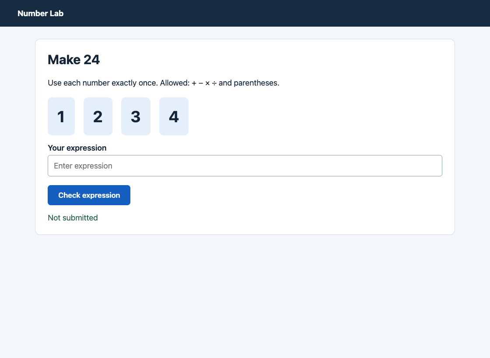
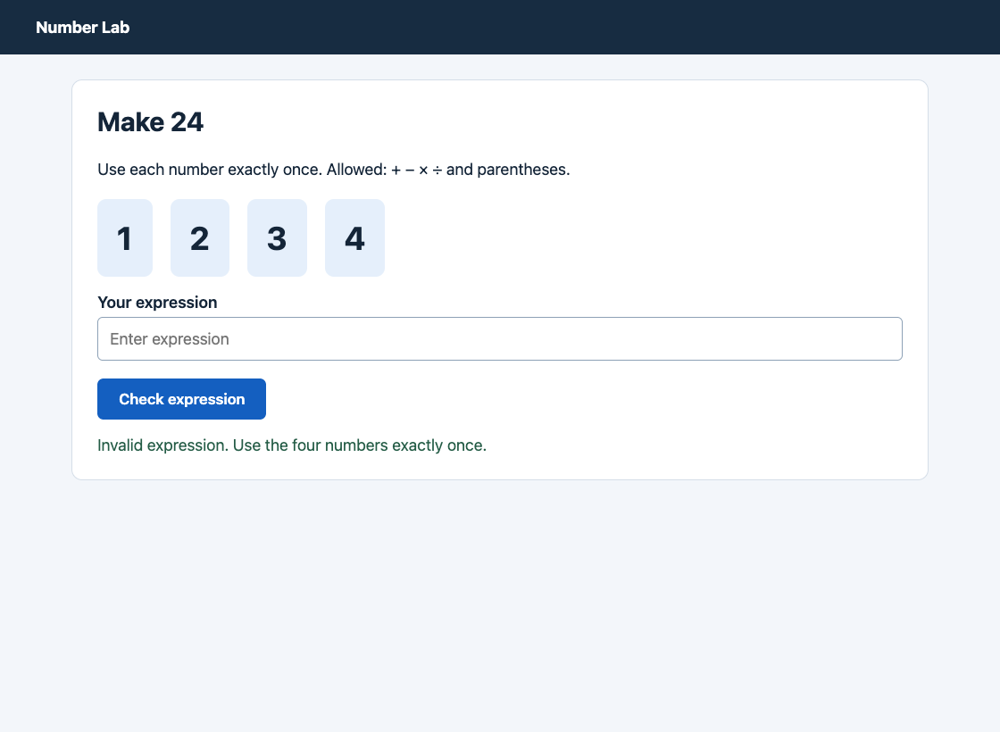

Solve the visible 24 puzzle. Enter an arithmetic expression equal to 24 using each of the four displayed numbers exactly once. Only +, -, *, / and parentheses are allowed. Click Check expression to submit it.
{
"id": "math-easy-0",
"family": "math",
"level": "easy",
"success": false,
"end_condition": "interrupted",
"actions": 2
}
{
"step": 1,
"image": "00.png",
"public": {
"instruction": "Solve the visible 24 puzzle. Enter an arithmetic expression equal to 24 using each of the four displayed numbers exactly once. Only +, -, *, / and parentheses are allowed. Click Check expression to submit it.",
"tabs": [
{
"index": 0,
"title": "Number Lab",
"url": "http://127.0.0.1:55585/"
}
],
"active": 0
},
"action": {
"action": "click",
"x": 124,
"y": 534,
"text": "",
"tab": 0,
"memory": "The 'Make 24' puzzle is displayed with numbers 1, 2, 3, and 4. The expression field is ready for input. The allowed operations are +, -, *, / and parentheses."
},
"timing": {
"seconds": 13.586882792005781,
"attempts": 1,
"responses": [
{
"raw_content": "{\"action\": \"click\", \"x\": 124, \"y\": 534, \"text\": \"\", \"tab\": 0, \"memory\": \"The 'Make 24' puzzle is displayed with numbers 1, 2, 3, and 4. The expression field is ready for input. The allowed operations are +, -, *, / and parentheses.\"}",
"done_reason": "stop",
"generated_tokens": 83,
"thinking_characters": 0,
"load_seconds": 0.27163175
}
]
},
"execution_error": null
}
{
"step": 2,
"image": "01.png",
"public": {
"instruction": "Solve the visible 24 puzzle. Enter an arithmetic expression equal to 24 using each of the four displayed numbers exactly once. Only +, -, *, / and parentheses are allowed. Click Check expression to submit it.",
"tabs": [
{
"index": 0,
"title": "Number Lab",
"url": "http://127.0.0.1:55585/"
}
],
"active": 0
},
"action": {
"action": "click",
"x": 185,
"y": 534,
"text": "",
"tab": 0,
"memory": "The 'Make 24' puzzle is displayed with numbers 1, 2, 3, and 4. The expression field is ready for input. The allowed operations are +, -, *, / and parentheses. The user has clicked on the expression field to focus it."
},
"timing": {
"seconds": 8.791090582992183,
"attempts": 1,
"responses": [
{
"raw_content": "{\"action\": \"click\", \"x\": 185, \"y\": 534, \"text\": \"\", \"tab\": 0, \"memory\": \"The 'Make 24' puzzle is displayed with numbers 1, 2, 3, and 4. The expression field is ready for input. The allowed operations are +, -, *, / and parentheses. The user has clicked on the expression field to focus it.\"}",
"done_reason": "stop",
"generated_tokens": 95,
"thinking_characters": 0,
"load_seconds": 0.194883334
}
]
},
"execution_error": null
}